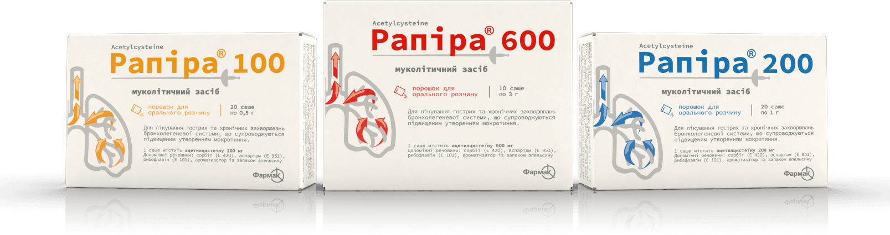
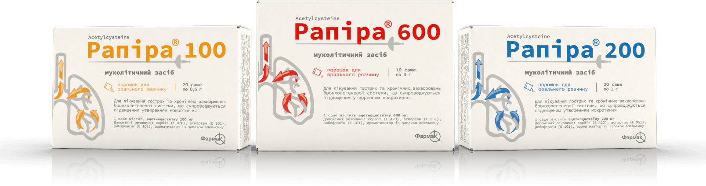

пряма допомога від кашлю!
Володіє вираженою муколітичною дією та дієво очищує легені від мокротиння
Рекламний ролик для лікарського засобу Рапіра
Рапіра
Якщо у Вас чи у Вашої дитини розпочався кашель, відчувається підвищене утворення мокротиння в дихальних шляхах, що призводить до кашлю та бажання відкашляти - для допомоги собі чи Вашій дитині від кашлю можете спробувати порошок Рапіра!
Дізнатися більше інформації про РапіраЯк приймати
Оберіть дозу
Усі варіанти підбору дози описані в інструкції для медичного застосування лікарського засобу Рапіра 100, 200, 600 у розділі "Спосіб застосування та дози" Тут наведені можливі варіанти вибору дозу, які також відповідають інструкції.
Дозування для дітей
Для дітей від 2-х до 6-ти років:
По 1 пакетику Рапіра 100 2 рази на добу
Універсальне дозування
Для дорослих та дітей від 6-ти років:
По 1 пакетику Рапіра 200 2-3 рази на добу
Висока доза ацетилцистеїну
Для дорослих та дітей від 12 років:
По 1 пакетику Рапіра 600 1 раз на добу
Придбати порошок Рапіра необхідного дозування Ви можете в аптеці, або ж зробити замовлення, натиснувши на кнопку "Знайти в аптеці"
Приготуйте розчин
Розчиніть підібрану дозу порошку Рапіра у 1/3 склянки води (не гарячої)
Приготуйте розчин
Прийміть
Прийміть отриманий розчин одразу після приготування
Про виробника
Завдяки якості та інноваціям, АТ «Фармак» з 2010 року є лідером фармацевтичного ринку України* та найбільшим експортером лікарських засобів. На підприємстві функціонують 20 виробничих ліній, що відповідають вимогам GMP. 14 виробничих ліній сертифіковані європейським регуляторним органом.
Усе обладнання провідних європейських брендів: Siеmens, GEMÜ, AQUAFLOT, SBM, Bosch
З 2015 року в АТ «Фармак» працює власний комплекс із виготовлення субстанцій (департамент із виробництва АФІ) у м.Шостка, планова потужність якого становить 100 тонн субстанцій на рік. Сучасний дослідницький комплекс включає в себе: 4 різнопрофільні аналітичні лабораторії, 2 лабораторії із біотехнологічних та синтетичних АФІ, 3 технологічні лабораторії для готових форм, 4 пілотні R&D дільниці.
Лабораторії оснащені високотехнологічним обладнанням таких світових виробників, як-от Glatt, SBM, Urlinski, Belimed, De Ditrich, Gea, Sartorius, Malvern Instruments та ін.
 
